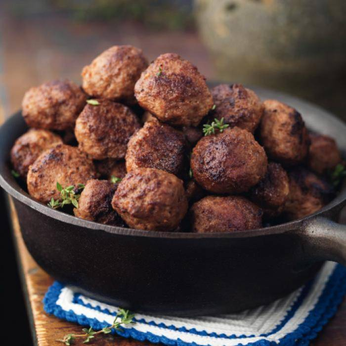

Swedish meatballs

Swedish Meatballs Recipe photo by Mitt Kok
Ingredients
- 4 eggs
- 1 cup milk
- 8 slices white bread, torn
- 2 pounds ground beef
- ¼ cup finely chopped onion
- 4 teaspoons baking powder
- 1 to 2 teaspoons salt
- 1 teaspoon pepper
- 2 tablespoons shortening
- 2 cans (10-¾ ounces each) condensed cream of chicken soup, undiluted
- 2 cans (10-¾ ounces each) condensed cream of mushroom soup, undiluted
- 1 can (12 ounces) evaporated milk
- Minced fresh parsley
Directions
- In a large bowl, beat eggs and milk. Add bread; mix gently and let stand for 5 minutes. Add beef, onion, baking powder, salt and pepper; mix well (mixture will be soft). Shape into 1-in. balls.
- In a large skillet, brown meatballs, a few at a time, in shortening. Place in an ungreased 3-qt. baking dish. In a bowl, stir soups and milk until smooth; pour over meatballs. Bake, uncover, at 350° for 1 hour. sprinkle with prasley. Yield: 8-10 servings.